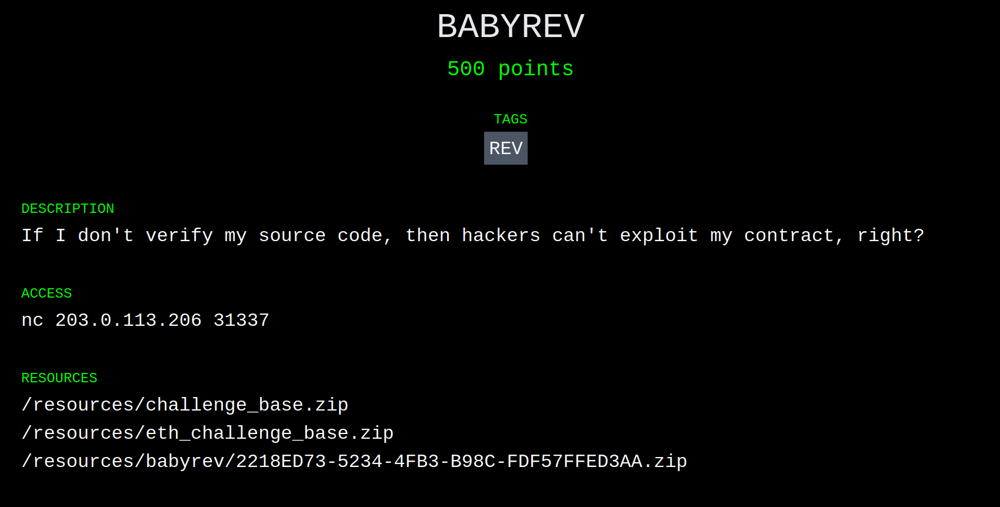
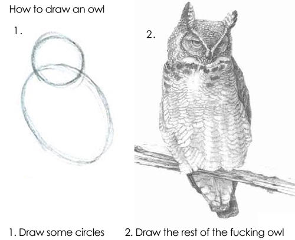

Introduction
In my two preceding posts, I give short summaries of the BABYCRYPTO and BROKER challenges from Paradigm's recent Capture the Flag competition. If you'd like more details on the competition itself, or the format of the challenges, go and give my BABYCRYPTO post a read first.
Today I'll be going over the BABYREV challenge which was, by far, the longest challenge we completed during the competition. I'd also like to dedicate this post to @adietrichs' and my collective sanity, which unfortunately didn't survive the 10+ hours we spent on this puzzle.
Disclaimer: unlike the rest of our team, @adietrichs and I don't have a ton of experience auditing or reverse engineering Ethereum contracts; we're protocol researchers. The approach we take here is the most basic, brute-force approach to solving this problem, but hey, it worked!
Challenges
BABYREV
After a relatively successful exploit on BROKER, I joined @adietrichs on BABYREV. Based on the name and description, it was pretty obvious we'd be dealing with a reverse engineering puzzle.

The contents of the archive:
.
└── babyrev
└── public
├── contracts
│ └── Setup.sol
├── deploy
│ ├── chal.py
│ ├── compiled.bin
│ └── requirements.txt
└── Dockerfile
What immediately stands out is that the only contract we have is Setup.sol, unlike BROKER which gave us the Broker contract. We do have compiled.bin, which is a JSON file with the output from the compiler:
{ "contracts":{ "/private//Challenge.sol:Challenge":{ "bin":"..." }, "contracts/Setup.sol:ChallengeInterface":{ "bin":"" }, "contracts/Setup.sol:Setup":{ "bin":"..." } }, "version":"0.4.24+commit.e67f0147.mod.Darwin.appleclang" }
The rest of the archive is pretty similar to BROKER: Setup.sol checks the win condition, and there's a bunch of Docker magic that spins up a fork of mainnet for the challenge.
Win Condition
From Setup.sol:
function isSolved() public view returns (bool) {
return challenge.solved();
}
Well that's profoundly useful. The win condition is part of the secret Challenge contract. I guess it's time to jump right into the EVM1 assembly...
Aside: Disassembly
The bytecode in compiled.bin is encoded in hexadecimal, and isn't particularly readable. Disassembly is the process of decoding the hexadecimal string into something slightly more understandable.
The basic disassembly process looks something like this:
- Read the first byte from the assembled program:
80. - Look up what that byte means, and for
80that would beDUP1(or duplicate the top item of the stack.) - If the byte encoded a
PUSHinstruction, read the immediate argument (so forPUSH1, read one extra byte; two forPUSH2; and so on.) - Repeat until the entire bytecode is disassembled.
Following those steps, an input like 0x6080604052 would become:
PUSH1 0x80
PUSH1 0x40
MSTORE
Thankfully this process is automated. We used ethervm's decompiler, which spits out an annotated disassembly (and a decompiled version too!)
Further Aside: Constructors
Solidity is a wondrous beast that takes care of the complex process of deploying a contract. Unfortunately we aren't looking at Solidity, so here be dragons.
The first bytes (roughly up to the second 6080) of a compiled contract are actually the constructor code, or the bits of code Solidity generates to get your contract constructed and deployed on-chain. Constructors, also known as initcode, take care of assigning initial storage values, populating immutable variables, and finally copying the code to be deployed into memory.
Since we aren't super interested in the constructor for this challenge, we snip it off before passing the bytecode to the disassembler.
Challenge Preamble
The first thing Solidity contracts do is ensure that the calldata is at least four bytes long:
entrypoint: // Okay, I lied.
PUSH1 0x80 // Setting up the free memory pointer is the very first
PUSH1 0x40 // thing. The pointer lives at address 0x40 and is
MSTORE // initially set to 0x80. Solidity uses the first few
// 256-bit words of memory as scratch space.
PUSH1 0x04 // Then we do check the calldata length.
CALLDATASIZE
LT
PUSH2 0x0062
JUMPI // If the calldata is too short, revert (eventually.)
// Else, fall through into the function selector
// blocks.
The calldata must be at least four bytes long, at least in this contract, because the first four bytes are used as an identifier for the function to call. The selectors are calculated from the keccak256 hash of the function signature.
This is the first function selector block from Challenge:
selector_0adf939b:
PUSH1 0x00
CALLDATALOAD // Push the 0-th word of calldata.
PUSH29 0x0100000000000000000000000000000000000000000000000000000000
SWAP1
DIV
PUSH4 0xffffffff
AND // DIV+AND emulates (calldata[0] >> 224)
DUP1
PUSH4 0x0adf939b // Push the function selector.
EQ
PUSH2 0x0067
JUMPI // Jump to 0x67 if the selector matches.
This structure is repeated for the four public functions in Challenge:
| Selector | Signature2 |
|---|---|
0x0adf939b | ?? |
0x39ac0e49 | ?? |
0x799320bb | solved() |
0x799320bb | solve(uint256) |
We only succeeded in guessing one (solve(uint256)) of the three unknown selectors. Thankfully, we didn't need to call the others directly from Solidity. We can now expand ChallengeInterface with an additional function:
interface ChallengeInterface {
function solved() public view returns (bool);
function solve(uint256) public;
}
At last our goal becomes clear: figure out some input for solve that makes solved return true.
Much Further Aside: Tools & Deadends
If you're somewhat familiar with reverse engineering, you might be wondering if we tried any tools while cracking this challenge. Well, we did, but unfortunately none of them were able to solve this puzzle. 3
Specifically we tried:
manticore-verifier- timed outgen_exploit.pyfrom teether, modified - out of memorymythril- no output specific to the challenge
Our failure with these tools is not a sign that they aren't useful, but rather that @adietrichs and I have very little experience with them. I'm sure that in the right hands, they're formidable allies.
If you look carefully at the disassembly, you'll note two large constants in the code:
0x311dfa5451963f33b16e63f0c62278c9b907e43d1961cdf9f590a0c3b351c04019cccb8314030x504354467b763332795f3533637532335f336e633279703731306e5f34313930323137686d7d
If you look even carefully-er, you might even notice that the second constant is valid ASCII, and that it decodes to PCTF{v32y_53cu23_3nc2yp710n_4190217hm}. That constant, alone, is not enough to capture the flag. 4
Strategy
Without tool support, and with little else to do, we decided to manually walk through the entire contract, annotating the stack along the way. For those in the know, this is basically primitive symbolic execution. Our eventual goal was to recover enough of the solve function to see exactly what path we'd need to hit. We settled on a very simple annotation format: opcode [stack-after-opcode]. The top (most recently pushed) of the stack would always be on the left.
A small snippet of annotated assembly would look like this:
PUSH1 0x10 [0x10]
PUSH1 0x59 [0x59, 0x10]
ADD [0x69]
MLOAD [M0] // M0 := mload(0x69)
And so we began. We annotated, and we annotated some more. We annotated so much, we annotated galore. Seriously, this took us hours. You can see the final annotated assembly here.
Islands of Interest
Although annotating the assembly was slow going, we did quickly identify some sections of code that were interesting, and from there, reversed the important bits.
Comparison Subroutine
The most obviously interesting place, and the first place I started tracing, was the comparison subroutine that then stores a true into storage. The only SSTORE in the whole contract is at offset 0x1157. If we wanted to solve the challenge, this is where we'd have to end up.
In the interest of preserving your sanity, dear reader, I won't inline the entire disassembly of the comparison subroutine. Instead, here is some pseudo-code:
function solve(uint256 C) private {
bytes memory expected = /* ... */;
bytes memory actual = do_some_magic(C);
if (keccak256(actual) == keccak256(expected)) {
storage[0x00] = (storage[0x00] & ~0xFF) | 0x01;
}
}
Essentially, the final parts of the solve function compared the output of do_some_magic(C) (where C is under our control) to some expected value. If they matched, set storage[0x00], marking the puzzle as solved.
The Table™
The comparison function may have been the most obviously interesting, but the most perplexing section was roughly between offsets 0x0396 and 0x0D93. This blob of instructions was surprisingly regular. It consisted of 256 repetitions of this:
PUSH1 0x63 // Changes every repetition
PUSH1 0xff
AND [0x63, M_A0, M_A0, 0x00, 0x60, M_Z0, C, 0x01e1, FSEL]
DUP2 [M_A0, 0x63, M_A0, M_A0, 0x00, 0x60, M_Z0, C, 0x01e1, FSEL]
MSTORE [M_A0, M_A0, 0x00, 0x60, M_Z0, C, 0x01e1, FSEL] // memory@M_A0 := 0x00..0063
PUSH1 0x20 [0x20, M_A0, M_A0, 0x00, 0x60, M_Z0, C, 0x01e1, FSEL]
ADD [M_A1, M_A0, 0x00, 0x60, M_Z0, C, 0x01e1, FSEL]
FSELwas the function selector.0x01e1was the eventual return address.Cwas theuint256argument supplied tosolve.M_A0andM_Z0were pointers to the first sections of memory regions we calledAandZ.M_A1was the next section. I know, so creative.
It took us a fairly long while to reason out what this section of code does, but eventually it became clear that this section builds an array of 256 values (which we called The Table™) in memory. Roughly, the following Solidity translates to something like The Table™:
uint8[256] memory values;
values[0] = 0x63;
values[1] = 0x7c;
values[3] = 0x77;
.
.
.
values[253] = 0x54;
values[254] = 0xbb;
values[255] = 0x16;
An array of 256 values is pretty suspicious. It could be a map for a substitution cipher. It could be a cleverly disguised constant that needs to be XOR'd with the input value. It was neither, but we'll come back to it later!
The Magic
The do_some_magic subroutine above covers a lot of assembly, and was pretty much a giant black box. We slowly uncovered how it worked, piece by piece. The first major milestone was discovered Sunday morning, at around 03:45:
I was referring to the subroutine around 0x1169. In pseudo-code:
weird = C
/* ... */
for (j = 0; j < 32 * 8; j += 8) {
offset = (weird >> j) && 0xff
elem = a_arr[offset]
new_weird |= elem << j // add elem byte to the left
}
Cis, again, theuint256from calldata.weird5 is, uh, a weird number. It's used later.new_weirdis transformed fromweird.
And in more English-like (but equally indecipherable) terms, this inner loop took weird and:
- Looked up the
j / 8th byte inweirdfrom The Table™, - Prepended that byte on the left hand side of
weird, and - Stored it in
new_weird.
What kind of algorithm does something like this? A hash function.
What kind of algorithm breaks automated tools? A hash function.
What did this code end up being? A hash function.
How to Decompile a Hash Function

From this point onward it was basically just decompiling more blocks from the disassembly, and translating them into pseudo-code. Don't get me wrong, there was a ton of work, and several "Aha!" moments, but there's really not much more to write about. By early evening (for me, night for @adietrichs) on Sunday, we had reversed the whole solve(uint256) function, including do_some_magic:
// The Table™
a_arr = hex"637c777bf26b6fc53001672bfed7ab76ca82c97dfa5947f0add4a2af9ca472c0b7fd9326363ff7cc34a5e5f171d8311504c723c31896059a071280e2eb27b27509832c1a1b6e5aa0523bd6b329e32f8453d100ed20fcb15b6acbbe394a4c58cfd0efaafb434d338545f9027f503c9fa851a3408f929d38f5bcb6da2110fff3d2cd0c13ec5f974417c4a77e3d645d197360814fdc222a908846eeb814de5e0bdbe0323a0a4906245cc2d3ac629195e479e7c8376d8dd54ea96c56f4ea657aae08ba78252e1ca6b4c6e8dd741f4bbd8b8a703eb5664803f60e613557b986c11d9ee1f8981169d98e949b1e87e9ce5528df8ca1890dbfe6426841992d0fb054bb16"
// Target String - PCTF{v32y_53cu23_3nc2yp710n_4190217hm}
t_str = hex"504354467b763332795f3533637532335f336e633279703731306e5f34313930323137686d7d"
// Weird String
b_str = hex"311dfa5451963f33b16e63f0c62278c9b907e43d1961cdf9f590a0c3b351c04019cccb831403"
weird = C
for (i = 0; i < len(b_str); i++) {
weird_byte = weird && 0xff
b_str[i] ^= weird_byte
new_weird = 0x00
for (j = 0; j < 32 * 8; j += 8) {
offset = (weird >> j) && 0xff
elem = a_arr[offset]
new_weird |= elem << j // add elem byte to the left
}
weird = (new_weird && 0xff) << 31 * 8 | new_weird >> 8
}
target_hash = sha3(t_str)
our_hash = sha3(b_str)
if (target_hash == our_hash) {
// Win the thing!
storage[0x00] = (storage[0x00] & ~0xFF) | 0x01;
}
The key takeaway here is that each byte of b_str gets overwritten with itself xor'd with the least significant byte of weird.
Computing C: A Rope of Sand
Now that we know how C is used, we need to find a concrete value for C that correctly decodes b_str. Python to the rescue!
# This is where I'll put the Python tool when I get it from @adietrichs
Because of the way this hash function is constructed, it is possible to isolate each byte of the input value, one at a time. If this were a real hash function (like SHA-3), there'd be mixing between the bytes, making this process practically impossible.
Now that we know C, we can craft the attack transaction, and solve the challenge.
Conclusion
This concludes my mini-series on Paradigm's CTF competition. Thanks for sticking it out, and I hope you enjoyed it.
If you'd like to see some of our team's other solutions, check out:
- BANK by @smarx
- VAULT also by @smarx
- JOP Part 1 and Part 2 (solved after the competition) by @adietrichs
- UPGRADE by @adietrichs
A huge thank you to Paradigm for putting this whole thing together. It was a blast!
Footnotes
Ethereum Virtual Machine, the abstract computer simulated by Ethereum, that Solidity targets.
It is infeasible to recover the function signature given the selector, but 4byte.directory provides a public database mapping selectors to known signatures.
Likely intentional on the puzzlesmith's part!
No matter how much you want it to be.
I called this ACC (for accumulator), but @adietrichs' weird won out in the end. What do you want? It's a weird number.